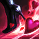
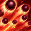

Passiva – Batida do Amor

Q – Dois por Um

W – Desfilando

E - Chuva de Disparos

R – Metendo Bala

| Nome | Descrição |
|---|---|
Passiva – Batida do Amor
| Miss Fortune causa dano extra ao atacar um alvo novo. Isso ajuda a trocar de alvo rapidamente durante as lutas. |
Q – Dois por Um
| Miss Fortune dispara um tiro em um inimigo. Se o alvo for abatido ou o projétil continuar, ele ricocheteia e atinge outro inimigo, causando bastante dano. |
W – Desfilando | Miss Fortune ganha velocidade de movimento ao ficar sem receber dano por alguns segundos. Quando ativada, também recebe velocidade de ataque extra. |
E - Chuva de Disparos | Miss Fortune dispara uma chuva de balas em uma área, causando dano aos inimigos e diminuindo sua velocidade de movimento. |
R – Metendo Bala | Miss Fortune canaliza uma enorme rajada de tiros em forma de cone à sua frente, causando grande dano aos inimigos atingidos. É sua habilidade mais poderosa e famosa. |